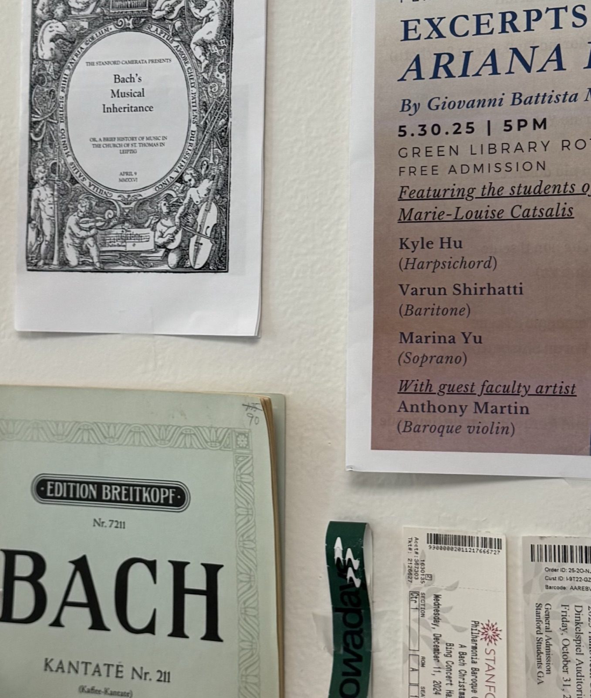

When I was young, my dad would say that I had a lot of 音乐细胞, which literally translates to “music cells”. Neither of my parents is musical, but I understood what cells are: just little pieces inside your body. So I thought, the little parts inside of me really liked music and were moving to the beat, right?
My earliest memories of music were Music Together, a play-based musical education program for children and newborns. I absolutely loved it, though maybe partly because I was a 4-year-old who loved the praise from the adults who told me I had an “innate melodic and rhythmic sense”.
The same way some children invent and speak fake languages, I made up music. I wasn’t forced into violin or piano lessons at a young age. As a consequence, I never saw music as something I had to study or practice for. Eventually, I begged my parents for piano lessons at the age of 9, which I dabbled in for a few years.
While I never became a piano prodigy, it taught me how to read music. That’s how I discovered the joy of “looking” at music. What I mean by this is that I would just stare at the open score of a symphonic piece or something and hear the music. This was really fun for me.
Being able to read music also allowed me to formalize my inventions. I could see and hear every single layer so clearly in my head, but felt bogged down writing things when my brain was already 10 measures ahead. This was a task I quickly abandoned; I remember even just using a ruler to draw five parallel lines for a staff was too much. By 12, I’d moved on to producing in GarageBand, which mostly meant fighting it.
When I was around 15, I came across the score of Rodelinda, a Baroque opera by George Frideric Handel. In addition to the instruments, there were vocal parts. I wasn’t quite sure how to render these sounds in my head. Voice was an instrument that had additional textures and shapes that a regular instrument did not have. I was fascinated, and even ordered a rental DVD of a recording from Netflix. And so my fascination with Baroque vocal music began.
After a few months of YouTube watching and practicing in my closet, I recorded two audition videos and submitted them to the San Francisco Conservatory of Music’s Pre-College program, where my first formal musical studies began. Similar to my experiences in Music Together 10 years earlier, I was praised for the tone of my voice and phrasing of the music: “talent”, they called it. But this time I had classes, exams, and juries. Would I still love music?
At Stanford, which isn’t a conservatory, music took a backseat, but I’ve still found ways to continue singing Baroque music. Sometimes I wonder where I would be today if I had continued studying music, but I’m also glad I didn’t, because again, I’d never viewed music as a “field of study”.

Last year, I developed an urge to try DJing, probably due to the osmotic effects of concerts and college parties. Being a good DJ starts with listening to a lot of music. This was good news for me: I’d been training for this since middle school! For all these years, I’d listened to copious amounts of music, everything from electronic and rock to dance and reggae. This past summer, there were weeks when I listened to over 4,000 minutes of music: that’s 9 hours and 31 minutes a day.
I’ve come to enjoy it a lot. I can see every layer, all the textures, all the shapes. I can anticipate every shift. As a DJ, I control some of that, but not the way I did as a conductor, where the music is pre-rehearsed. Not the way a singer does, where the extent of improvisation is the ornaments and cadenzas. And not the way a composer or producer does. Instead, I choose when to cut or bring in a track, how to adjust the EQs, and what to play. And I feel uniquely connected to the people dancing to my set.
As I wrap up my final year at Stanford, I’m thinking about what I look forward to. Music has always been something that I’ve done for myself, but this year, I want to reach more people: DJing my first party, continuing to cantor at Mass, and inviting many more friends to my Baroque music recitals. I hope to share music as the experience it’s always been. And I hope that all the little cells in my body will keep moving to the beat for the rest of my life.